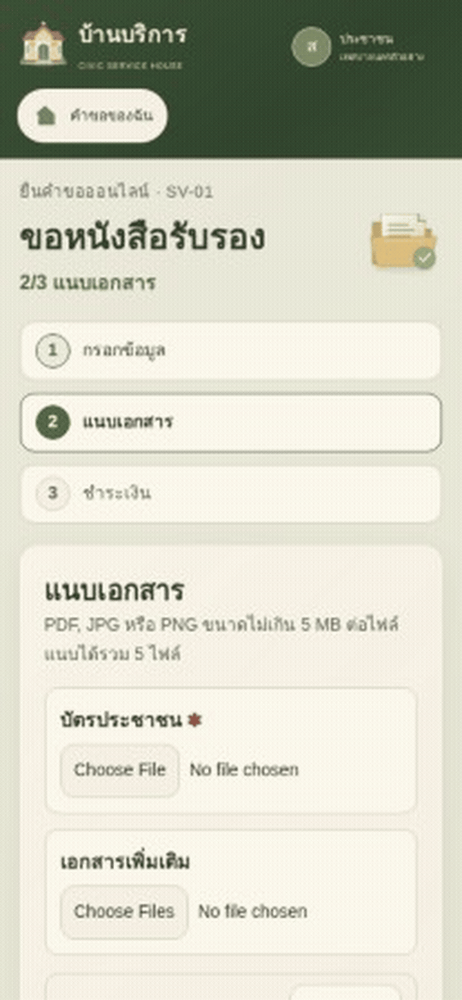

ขั้น 4 · TEST-PLAN ชุดเต็ม · TEST_MODE=1 · ไม่ตั้ง BUG_MODE · Node 24.22.3 · workers 1 · retries 0
ผลทดสอบ e-Service: 51/51 ผ่าน
รันเมื่อ 2026-11-23T00:27:50.006Z · TC ที่ขาดจากแผน: 0 · TC นอกแผน: 0 · GIF สำหรับ TC ระดับ P1 สร้างจาก screencast ใน Playwright trace
51ผ่าน
0ล้ม
0ข้าม
0flaky
| TC | ชื่อ | ระดับ | ผล | เวลา | หลักฐาน |
|---|---|---|---|---|---|
| TC-AUDIT-01 | เหตุการณ์และฟิลด์ใน Audit | P1 | ผ่าน | 3.6s | ดู GIF |
| TC-AUDIT-02 | Audit แก้/ลบไม่ได้ (405) | P1 | ผ่าน | 1.0s | ดู GIF |
| TC-AUDIT-03 | กรองช่วงวันที่ตามเวลาไทย | P1 | ผ่าน | 3.7s | ดู GIF |
| TC-AUTH-01 | เลขบัตร 13 หลัก + checksum | P1 | ผ่าน | 9.1s | ดู GIF |
| TC-AUTH-02 | OTP ผิด 3 ครั้งล็อก 15 นาที | P1 | ผ่าน | 7.1s | ดู GIF |
| TC-AUTH-03 | ลงทะเบียนครั้งแรก | P1 | ผ่าน | 4.0s | ดู GIF |
| TC-AUTH-04 | เจ้าหน้าที่ SSO จำลองและหน้าตั้งต้น | P2 | ผ่าน | 20.2s | – |
| TC-DASH-01 | Dashboard ตัวเลขเริ่มต้น | P1 | ผ่าน | 1.0s | ดู GIF |
| TC-DASH-02 | Dashboard ย้อนหลัง | P1 | ผ่าน | 2.0s | ดู GIF |
| TC-DASH-03 | ส่งออก Excel/PDF เท่าหน้าจอ | P2 | ผ่าน | 2.3s | – |
| TC-DASH-04 | ค่าขอบ "ทันกำหนด" 16:29:59 / 16:30:00 / 16:30:01 | P1 | ผ่าน | 2.6s | ดู GIF |
| TC-DOC-01 | ออกเอกสารและข้อมูลในเอกสาร | P1 | ผ่าน | 2.2s | ดู GIF |
| TC-DOC-02 | ตรวจเอกสาร /verify | P1 | ผ่าน | 0.9s | ดู GIF |
| TC-DOC-03 | เอกสารหมดอายุและลายเซ็นไม่ตรง | P1 | ผ่าน | 5.2s | ดู GIF |
| TC-FEE-01 | ค่าธรรมเนียม SV-01 / SV-02 / SV-03 | P1 | ผ่าน | 2.5s | ดู GIF |
| TC-NFR-01 | Responsive 375 / 768 / 1280 | P1 | ผ่าน | 27.1s | ดู GIF |
| TC-NFR-02 | WCAG: axe + คีย์บอร์ด + label + สถานะไม่ใช้สีอย่างเดียว | P1 | ผ่าน | 36.0s | ดู GIF |
| TC-NFR-03 | Health เวลาโหลด และผลซ้ำได้ | P2 | ผ่าน | 4.1s | – |
| TC-NFR-04 | เข้ารหัสข้อมูลส่วนบุคคลที่เก็บ (inspection) | P2 | ผ่าน | 0.6s | – |
| TC-NOTI-01 | ผู้รับแจ้งเตือนตามระดับ | P1 | ผ่าน | 3.0s | ดู GIF |
| TC-NOTI-02 | ไม่แจ้งซ้ำ ข้ามระดับ และขั้นรออนุมัติ/รอออกเอกสาร | P1 | ผ่าน | 11.8s | ดู GIF |
| TC-PAY-01 | อายุ QR 15:00 | P1 | ผ่าน | 1.5s | ดู GIF |
| TC-PAY-02 | ยอดเงินและ callback ซ้ำ | P1 | ผ่าน | 0.5s | API-only test: no browser page was rendered |
| TC-PAY-03 | ชำระพร้อมกัน เลขไม่ซ้ำ | P1 | ผ่าน | 1.1s | API-only test: no browser page was rendered |
| TC-PAY-04 | เลขคำขอข้ามปี | P2 | ผ่าน | 1.4s | – |
| TC-PDPA-01 | ปิดบังเลขบัตรบนจอ | P1 | ผ่าน | 2.6s | ดู GIF |
| TC-PDPA-02 | API (JSON) ไม่ส่งเลขบัตรเต็ม | P1 | ผ่าน | 0.5s | API-only test: no browser page was rendered |
| TC-PDPA-03 | แสดงเลขเต็มต้องมีเหตุผลและบันทึก Audit | P1 | ผ่าน | 2.4s | ดู GIF |
| TC-QUEUE-01 | ลำดับคิวและขอบเขตแผนก | P1 | ผ่าน | 3.2s | ดู GIF |
| TC-QUEUE-02 | รับเรื่องซ้อน (พร้อมกันและต่อกัน) | P1 | ผ่าน | 3.9s | ดู GIF |
| TC-QUEUE-03 | งานในมือสูงสุด 10 | P1 | ผ่าน | 5.9s | ดู GIF |
| TC-RBAC-01 | ประชาชนเปิดคำขอคนอื่นไม่ได้ (IDOR) | P1 | ผ่าน | 1.0s | ดู GIF |
| TC-RBAC-02 | เจ้าหน้าที่อนุมัติ SV-02 ไม่ได้ (ตรวจที่ API) | P1 | ผ่าน | 1.9s | ดู GIF |
| TC-RBAC-03 | ตารางสิทธิ์หน้า/API ตามบทบาท | P1 | ผ่าน | 15.9s | ดู GIF |
| TC-RBAC-04 | ผู้ดูแลระบบ: บริการ วันหยุด ผู้ใช้ และยอดที่ล็อก | P2 | ผ่าน | 6.7s | – |
| TC-RBAC-05 | สิทธิ์เปิด/ดาวน์โหลดไฟล์แนบ | P1 | ผ่าน | 3.2s | ดู GIF |
| TC-RBAC-06 | ผู้ดูแลระบบ: ช่วงค่าที่ยอมรับ | P2 | ผ่าน | 5.1s | – |
| TC-SLA-01 | กำหนดเสร็จตามตารางวันที่ | P1 | ผ่าน | 7.1s | ดู GIF |
| TC-SLA-02 | หยุดนับ SLA ระหว่างรอแก้ไข | P1 | ผ่าน | 7.1s | ดู GIF |
| TC-SLA-03 | ระดับเตือน ปกติ / ใกล้ครบกำหนด / เกินกำหนด | P1 | ผ่าน | 6.3s | ดู GIF |
| TC-SUBMIT-01 | ยื่นคำขอ SV-01 ครบวงจร | P1 | ผ่าน | 2.7s | ดู GIF |
| TC-SUBMIT-02 | เอกสารบังคับครบก่อนชำระ | P1 | ผ่าน | 2.2s | ดู GIF |
| TC-SUBMIT-03 | ร่าง และการยกเลิก | P2 | ผ่าน | 6.7s | – |
| TC-UPLOAD-01 | ขนาดและจำนวนไฟล์ | P1 | ผ่าน | 7.1s | ดู GIF |
| TC-UPLOAD-02 | ชนิดไฟล์จากเนื้อไฟล์ | P1 | ผ่าน | 4.6s | ดู GIF |
| TC-WORKFLOW-01 | SV-01 อนุมัติ + ออกเอกสาร | P1 | ผ่าน | 2.1s | ดู GIF |
| TC-WORKFLOW-02 | SV-02 ผ่านหัวหน้า | P1 | ผ่าน | 5.2s | ดู GIF |
| TC-WORKFLOW-03 | SV-03 สามขั้นตอน | P1 | ผ่าน | 4.5s | ดู GIF |
| TC-WORKFLOW-04 | ตีกลับสูงสุด 2 ครั้ง และผลหลังครบ | P1 | ผ่าน | 5.9s | ดู GIF |
| TC-WORKFLOW-05 | เหตุผล ≥ 10 ตัวอักษร (ตีกลับ / ไม่อนุมัติ) | P1 | ผ่าน | 5.0s | ดู GIF |
| TC-WORKFLOW-06 | เวลาแก้ไข 168 ชั่วโมง | P1 | ผ่าน | 2.3s | ดู GIF |
ผล Playwright ดิบ: results.json · สรุป: summary.json · ผล BUG_MODE ดู BUG-HUNT.md